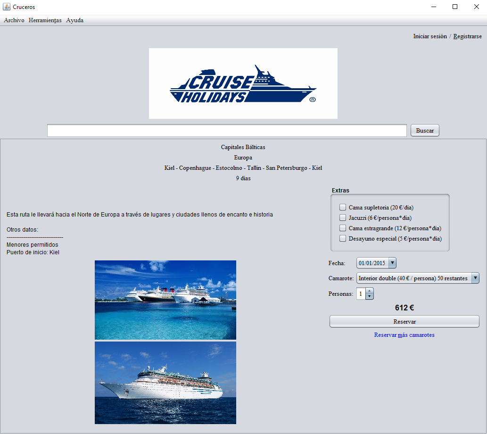

Panel de información del crucero

En este panel se muestra información detallada sobre el crucero seleccionado. En el panel lateral se puede seleccionar la fecha, camarote y número de personas que se desee reservar.
Extras
Es posibles escoger entre una serie de extras para el camarote. Ten en cuanta que estos aumentarán el coste en función del númere de pasajeros y días. En el caso especial de la cama supletoria, permite un pasajero más en la habitación, pero solo puede ser utilizada por un menor de 16 años.
Múltiples camarotes
Es posible reservar más de un camarote en el mismo pedido. Para ello hay que escoger el primero y luego pulsar en el botón "Reservar más camarotes". Ten en cuenta que la fecha se bloqueará, ya que solamente es posible reservar para una única fecha.
Menores
Los niños menores de 16 años son considerados menores de edad.